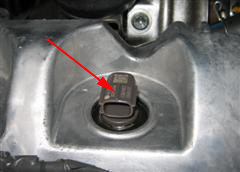

After replacing one or more injectors, the compensation code printed on each injector (see picture) must be programmed into the engine control module.
This must be done if:
One or more injectors have been replaced.
The engine control module is changed (All of the existing injector compensation codes must be programmed into the engine control module).
Note:
Injector compensation codes are unique for each injector. It is a 30-digit value printed on the head portion of each injector (see picture). If an incorrect injector compensation code is programmed into the engine control module, the engine may rattle or engine idling may become rough. In addition, engine failure may occur and the life of the engine may be shortened.

Test prerequisites:
The battery voltage should be >12 V.
Ignition on, engine off
No stored fault codes
Procedure:
Choose the function: Injector programming 1, 2, 3 or 4
A dialogue box confirms the programmed injector code.
Confirm with OK to reprogram the injector code.
If the injector code is correct press no.
Edit the 30-digit compensation code printed on the injector (see picture) and press the OK button to perform the programming.
If you want to exit the programming press abort.
A dialogue box confirms the chosed code, if it is correct press yes.
Press no to abort the programming.
After succeded programming the old and the new codes are displayed.
Confirm with OK to finish the programming.
Check and clear fault codes that may occure.
CAUTION: If the programming failes, check the fault codes and that the right compensation code is entered. If the compensation code is correct and no other faults are found the engine control module may not function well. Check the engine control module and restart this operation.